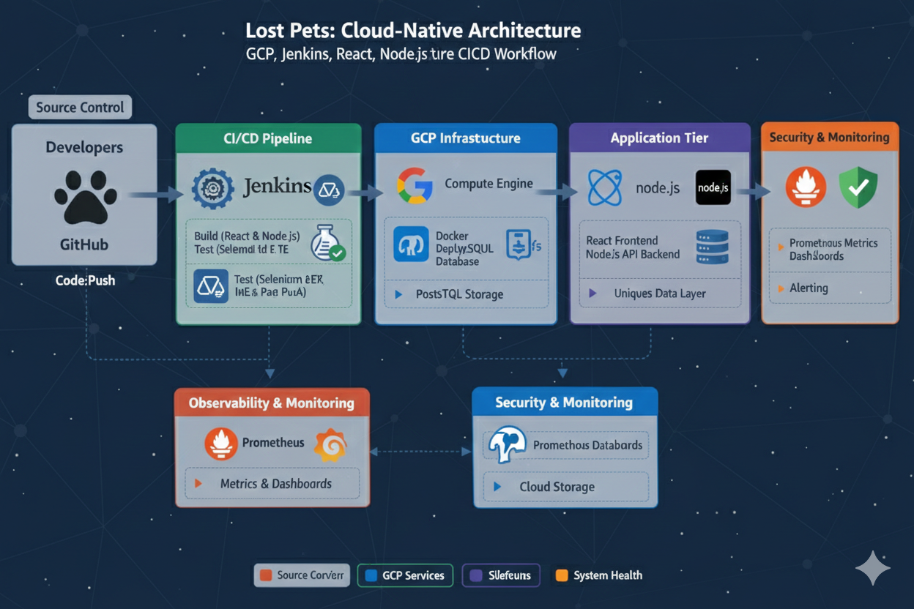

A cloud-native solution for reuniting lost pets with their owners.
Lost Pets is a community-driven web application designed to eliminate the anxiety of missing pets. The system utilizes unique ID tags (QR/Unique Alpha-numeric) assigned to pet collars. When a lost pet is found, the rescuer simply scans or enters the ID on our platform to instantly access owner contact details stored securely in our cloud database.
The system follows a modern full-stack architecture featuring a dynamic React frontend and a high-performance Node.js backend. Hosted on GCP Compute Engine, the application leverages a Postgres database to maintain high-integrity mapping between unique pet IDs and owner contact records. The entire deployment lifecycle is managed by an Jenkins CI/CD server, which automates the transition from code commit to production while executing Selenium suites to ensure platform reliability.

High-Level End-to-End CI/CD & GCP Workflow
Using Selenium to ensure the critical ID search functionality never breaks during updates.
Prometheus & Grafana stack monitoring request latency and database health.
Ensuring pet-owner sensitive data is encrypted and highly available via Postgres.
To maintain platform trust, we implemented Selenium WebDriver for automated UI testing. This ensures that the "Find My Owner" journey is functional across all browser types before Jenkins promotes a build to production.
Passionate about leveraging Cloud for social good? Reach out!